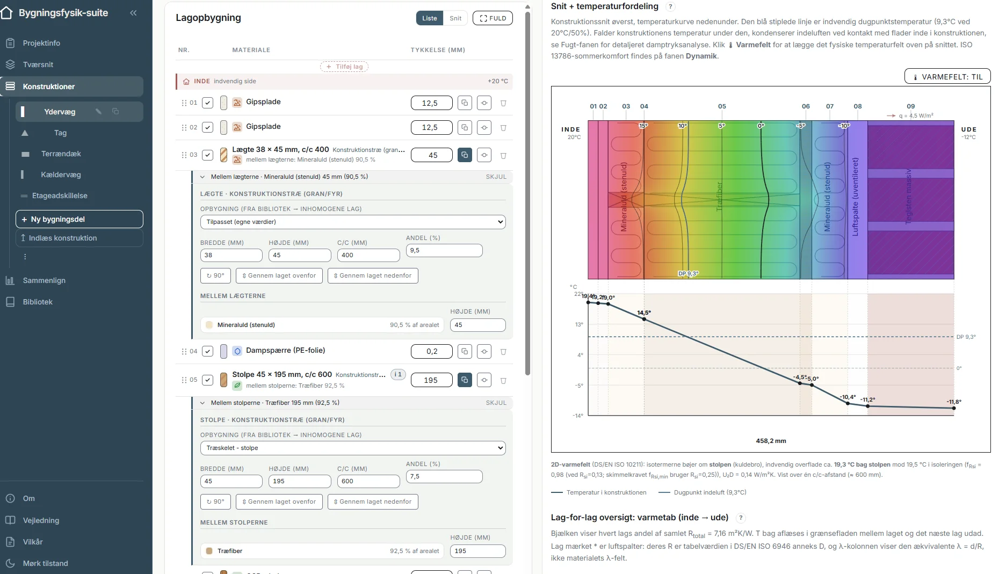

Statik
Statiske beregninger, konstruktionsprincipper og detaljer for bærende konstruktioner.
Direkte ingeniørrådgivning
Statik, byggetilladelser og tekniske løsninger fra første idé til dokumenteret projekt.

ISSANA I KORT FORM
ISSANA er et mindre rådgivende ingeniørfirma. Du taler direkte med den ingeniør, der forstår, beregner og dokumenterer dit projekt.
01 / YDELSER
Fra den første vurdering til det materiale, kommunen og udførelsen kræver.
Statiske beregninger, konstruktionsprincipper og detaljer for bærende konstruktioner.
Myndighedsprojekt, tegningsmateriale og koordinering af en overskuelig ansøgning.
Teknisk afklaring af eksisterende forhold, nye åbninger, etager og tilbygninger.
Varme, fugt, kondens, lyd og komfort dokumenteret i konstruktionens lag.
Principløsninger og koordinering af afløbsforhold ved mindre om- og tilbygninger.
LCA og materialevurderinger, når de giver mening for projektets krav og valg.
02 / PROJEKTER & REFERENCER
Udvalgte projekter fra de seneste år. Kundedata er anonymiseret, hvor opgaven er privat.

PRJ—01 / TILBYGNING

PRJ—02 / OMBYGNING
Renovering og udvidelse, hvor nye bygningsdele skulle fungere sammen med det eksisterende hus.


PRJ—04 / MYNDIGHED & STATIK
To boligenheder skulle forbindes gennem en ny åbning i en eksisterende væg.
03 / TEKNISK DOKUMENTATION
Et projekt skal ikke kun se rigtigt ud. Det skal kunne forklares, kontrolleres og fungere i praksis.

U-værdi, lagopbygning, temperaturprofil og kondensrisiko.
Termisk masse, sommerkomfort samt lyd- og akustikforhold.
LCA, materialers levetid og forventede udskiftninger, hvor relevant.
Beregningsforudsætninger og detaljer, som kan bruges på byggepladsen.

04 / OM ISSANA
ISSANA er bygget omkring én enkel idé: Den, du taler med, skal også forstå og udføre det tekniske arbejde.
Ali Kadum Hassan arbejder i krydsfeltet mellem konstruktioner, byggeteknik, bygningsfysik og digital projektering. Rådgivningen er praktisk, tydelig og tilpasset mindre byggeprojekter.
05 / SAMARBEJDET
Du ved, hvad næste skridt er, og hvad du modtager.
Vi gennemgår projekt, materiale og mål.
Du får omfang, leverancer og næste skridt.
Vi beregner, tegner og dokumenterer.
Materialet samles og forklares tydeligt.
06 / KONTAKT
Send en kort beskrivelse. Du får direkte svar fra en ingeniør om, hvad der skal til for at komme videre.